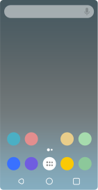
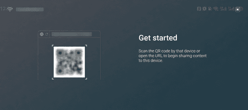

AirScreen 投屏踩坑实录：那些让你以为电视坏了的小问题
AirScreen 看着就是个装完点开就能收投屏的 App，实际上有好几个暗坑等着你。这篇整理了我半年来遇到的四类典型问题——从找不到设备到切出去就断，每个坑都给你症状、原因和解法。
AirScreen 这东西，从它的官网介绍来看表面上简单得不行——装在电视盒子上，iPhone AirPlay 一搜就连上，Mac 镜像屏幕也能直接切过去。但我用了大半年，踩过的坑说出来能绕电视柜三圈，每一次都让我怀疑是不是电视坏了或者盒子要换了。其实都不是，就是几个小设置没对齐。下面按出现频率从高到低说。
坑一：iPhone/Mac 死活搜不到 AirScreen 设备
症状：AirScreen 在电视上好好地显示着"等待连接"，你掏出 iPhone 打开控制中心点 AirPlay，设备列表里就是空空如也。Mac 那边 Screen Mirroring 也转了半天小菊花，最后告诉你没有可用设备。第一反应通常是"这 App 有问题"——然后你卸载重装、去官方下载了个新包重新装、重启盒子，一套操作下来还是没解决。
原因：八成不是 AirScreen 的事，是你的家庭网络。AirPlay、Cast、DLNA 这三种协议全靠局域网发现，路由器但凡在中间做了一点点隔离，设备就互相看不见。常见的坑包括：
- 手机连的是 Guest Wi-Fi（很多路由器默认隔离访客网络和主网络）
- 2.4G 和 5G 频段被分开成了两个 SSID，手机连 5G、盒子连 2.4G
- 路由器开了 AP 隔离或者客户端隔离
- 不同的路由器在同一个房子里，手机和盒子各连了一个
解法：最有效的办法不是逐个排查上面这些，而是直接做手机热点隔离测试。开个手机热点，电视盒子连上去，手机也切到这个热点，再搜一次。如果热点下能找到——那就是你家路由器的问题，回去调路由器设置或者换个统一 SSID 就行。如果热点下也找不到——那就要往下看了。

坑二：Android 12+ 位置权限拒绝，设备扫描直接歇菜
症状：这个坑我栽过两次，第一次栽了半小时才反应过来。现象和坑一完全一样——AirScreen 在运行，设备就是搜不到。热点测试也搜不到，重启手机重启盒子全没用，一度以为盒子不支持。
原因：Android 12 引入了新的安全策略——位置权限是发现局域网设备的必要条件。这不是 AirScreen 要定位你在哪，是 Android 系统自己的机制变化。如果你装 AirScreen 的时候不小心把位置权限设成了"仅在使用时允许"或者直接拒绝了，那即使 AirScreen 在前台，它也没权限扫描局域网设备。FireTV 用户注意了——FireOS 8 以上（Android 11 等价）还有额外的后台权限要求，要单独在系统里手动打开。
解法：进系统设置，找到 AirScreen 的应用详情页，把位置权限改成"始终允许"。FireTV 的用户要多走一步：Settings → Applications → Manage Installed Applications → AirScreen → Allow in background，这个开关如果没开，后台服务也白搭。更完整的 FireOS 后台权限设置步骤在airscreen文档里有专门章节。

坑三：一切出去投屏就断了
症状：投屏投到一半，想在电视上开个别的 App 查点东西，按一下 Home 键切走 AirScreen——画面立刻黑了。切回来重新发起投屏，再切走，又断。反复几次之后你会觉得这设计太反人类了。
原因：AirScreen 默认是前台运行的，一切到后台，Android TV 和盒子的 Doze 省电模式就开始杀它的网络监听。国产定制系统更狠——小米、当贝、极光这些盒子的后台清理策略比原生 Android 激进得多，切出去几分钟就直接把进程干掉了。这个问题 AirScreen 本身有后台服务功能能解决，但很多人不知道要手动开。
解法：AirScreen 应用内设置里有个 Background Service 开关，打开之后再去系统层面把电池优化设为"不限制"。国产系统额外要做两件事：把 AirScreen 锁定在最近任务列表里防止被清理，还有在自启动管理里加白名单。设置完之后，你想怎么切出去看别的 App 都行，投屏画面会一直叠加在上面。
坑四：免费版的广告和一些小限制
症状：如果你用的是免费版 AirScreen，投屏的时候会不定时弹出全屏广告，体验确实打折扣。另外某些高级功能——比如自定义设备名、录屏、后台服务——可能要 Pro 版才能用。还有人反映 Cast 按钮在某些 App 里找不到，不知道是 App 不支持还是 AirScreen 的问题。
原因：免费版靠广告维持，这是 Ionitech 的商业模式。Cast 按钮的问题多半是 App 本身没实现 Cast 协议——这跟 AirScreen 无关，原生 Cast 接收器也找不到这个按钮。Chrome 浏览器的 Cast 标签页和桌面 Cast 是另外一回事，那个只要 Chrome 正常就能用。
解法：如果你真需要自定义设备名和录屏，升级 Pro 版是正解。免费版够用的话忍一下广告就行——Cast 按钮找不到的 App，用屏幕镜像替代，效果差不多。
防坑清单
- 先查网络：搜不到设备的第一反应不是卸载重装，是开手机热点隔离测试
- 权限别漏：Android 12+ 位置权限设成"始终允许"，FireOS 8+ 单独开后台权限
- 后台服务必开：切出去要投屏不断，这个开关和电池优化设"不限制"是标配
- 国产盒子额外锁定：小米、当贝用户记得锁进程 + 自启动白名单
- 免费版就别要求太多：广告忍忍，Cast 按钮找不到用屏幕镜像兜底
其实知道这些坑之后，AirScreen 用起来相当省心——一台设备同时收 AirPlay、Cast、DLNA 三种协议，iPhone、安卓手机、Mac、Chrome 浏览器全通，不用来回换接收器。我现在家里手机投电视基本就走它，一年多没出过什么大问题。
资料整理方面，这套使用指南同步放在了GitHub仓库，国内访问慢的话可以直接看Gitee的镜像，还有一份备份在GitCode。